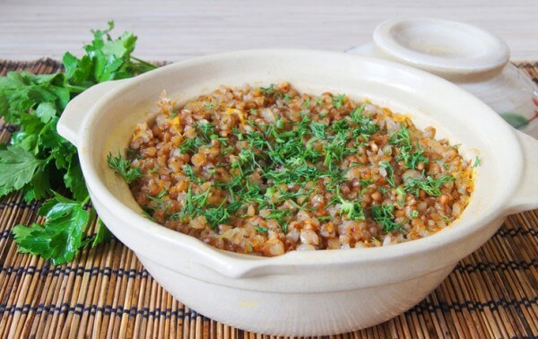
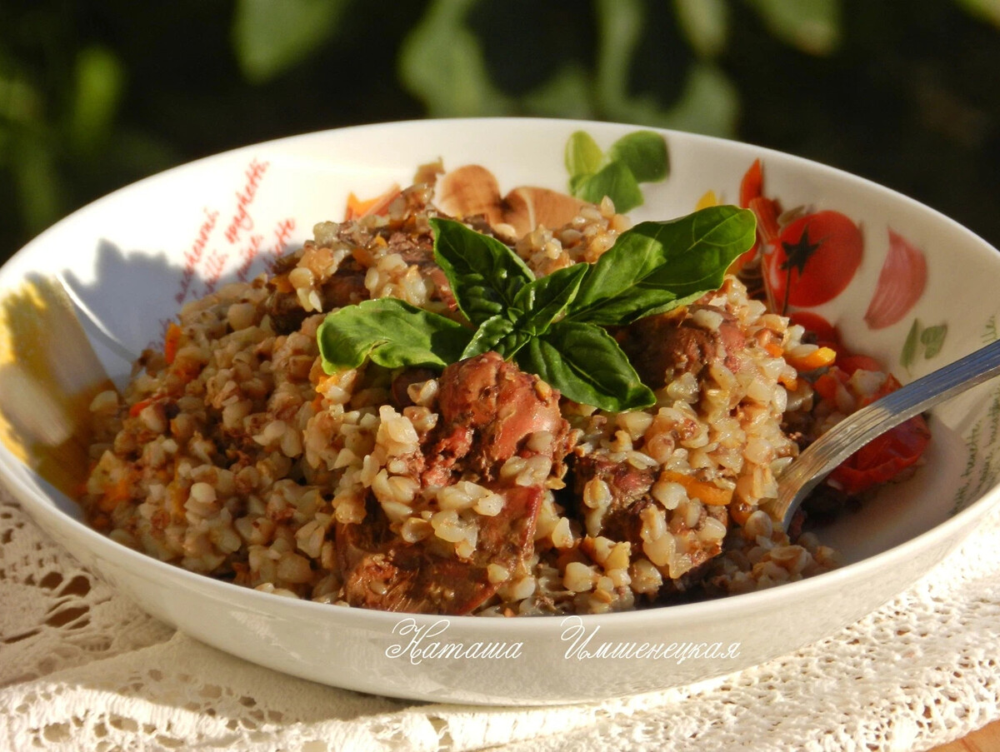

What we need.
- Buckwheat
- A pot
- Some seasonings
Cooking process
- Pour all the buckwheat into the pot
- Rinse the buckwheat 2-3 times in water.
- Fill the buckwheat with water so that there is 1.5 times more water than buckwheat.
- Put the pot on maximum heat and add the seasonings you want.
- Stir every 3 minutes and cook until boiling.
- Once boiling, simmer for another 5 minutes and turn off the heat
- Cover the pot with a lid and let the buckwheat stand for about 10-20 minutes.
- It's done! You can put it on plates and add some sauce and enjoy the buckwheat.
